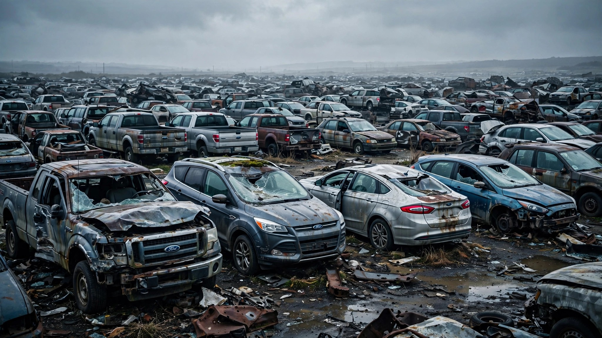

Ford’s Quality Chief Just Told You Which Model Years Are Broken. FARS Counted 6,539 Bodies.

Most automakers bury their quality problems in regulatory filings and bland press releases. Ford’s quality chief, Josh Levine, went to the Detroit Free Press on Friday and drew a circle around the crime scene. “We’re now getting ahead of those problems,” he said, “but still have challenges with vehicles that were designed in the 2013 to 2020 time frame.”[1] Seven model years, one corporate confession, and when we ran the FARS database for those exact years we found 6,539 occupant deaths across 28 Ford nameplates.
The F-150 leads, because the F-150 always leads: 1,543 dead from model years 2013 through 2020, peaking at 328 for the 2013 vintage alone. Behind it sits the Fusion at 964, the Escape at 849, the Focus at 819, and the Mustang at 536. These five nameplates account for 72% of Ford’s design-era body count.[2] The Fusion and Focus are discontinued, the Escape got a full redesign, and the F-150 is on its fourth generation since. Ford has essentially been running a decade-long controlled experiment in whether you can outrun bad designs with new ones, and the answer is: sort of, but slowly, and people keep dying while you figure it out.
Levine’s candor arrives in a week where Ford recalled 953,602 vehicles across two campaigns: 565,691 Broncos for wiring fires and 387,911 Explorers whose second-row seats unlatch while moving.[3] Ford now leads the industry with 60 recalls in 2026, triple second-place Chrysler and more than triple GM.[1] Levine frames this as progress. Newer 2026 and 2027 models compose just 3.3% of recall volume, software fixes cover 6.3 million of the 8.4 million vehicles recalled, and JD Power says initial quality is improving. All true.
Also true: 6,539 people are dead from the designs Levine just called problematic, and no software update rewinds that count. The recall system can replace a wiring harness on a 2024 Bronco and swap a seat switch on a 2022 Explorer, but it cannot redesign the 2014 Focus that crumples wrong in a frontal offset or the 2016 Fusion whose crash structure was one generation behind Honda’s. Those vehicles are already in driveways, accumulating fatal-crash involvement at rates between 1.23 and 2.52 deaths per 100 million VMT.[2] The only remedy for a design-era deficiency is time: wait for the fleet to age out.
Ford is betting the replacement is better, and the evidence is thin but directional: 2021-and-newer Ford model years have accumulated only 217 FARS deaths, 0.6% of the total.
The strangest part of Levine’s admission is what it reveals about the recall system itself. Ford files 60 recalls a year because the system catches component defects: a bad starter, a stuck switch, a fraying harness. It was never designed to catch what Ford’s quality chief just named out loud—that an entire generation of vehicles was designed wrong at the architecture level. That is not a recall; that is a confession.
If you own a Ford built between 2013 and 2020, the company’s own quality leadership just told you your vehicle comes from a problem era. Go to nhtsa.gov/recalls, enter your VIN, and check every open campaign. And understand that some of the risk Levine described is structural, baked into sheet metal and crash geometry, and no recall letter will ever fix it.
Sources & References
- Phoebe Wall Howard, “Latest Ford recall roundup includes defects that could cause injury,” Detroit Free Press, July 25, 2026. freep.com
- NHTSA, Fatality Analysis Reporting System (FARS), 2014–2023 data. Model-year cross-tabulation by The Crash Report. nhtsa.gov
- NHTSA recalls: Ford Bronco/Bronco Raptor wiring harness fire risk (July 24, 2026) and Ford Explorer/Lincoln Aviator second-row seats (July 22, 2026). nhtsa.gov/recalls
Source: NHTSA FARS 2014–2023 for occupant fatalities; model-year deaths are aggregated across all crash years in the observation period. Newer model years have shorter exposure windows, which suppresses their totals relative to older vintages. Ford-attributed deaths include only crashes where a Ford vehicle was listed as a case vehicle; pedestrian and other-vehicle-occupant deaths are not included. See methodology for caveats.